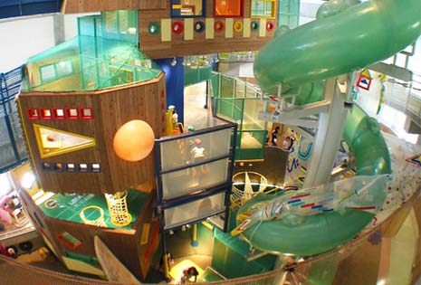
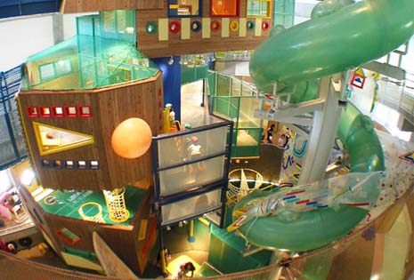

いわてこどもの森
 

奥中山地区の美しいブナ林に囲まれたいわて
子どもの森は、「楽しさ」「感動」「発見」
をとおして子どもの主体性や自立性を育む体
験型の児童館です。
広大な敷地内に、屋外の遊び場やキャンプ場
、屋内の遊び場があり、子どもも大人もゆっ
たりと楽しむことができます。
| 所在地 | 岩手県二戸郡一戸町奥中山西田子1468-2 |
|---|---|
| 電話番号 | 0195-35-3888 |
| 定休日 | 休館日は火曜(火曜が祝日の場合は翌日休館) 年末年始(12月29日～翌年1月3日) その他年4回の整備休館あり |
| 営業時間 | 9時～16時 (現在、新型コロナ感染拡大防止のため短縮中) |
| 料金 | 入場無料 |
[アクセス経路]
ルート1:【盛岡方面】 滝沢ICから40km（国道4号線・車で55分）
ルート2:【二戸方面】 一戸ICから28km（国道4号線・車で40分）
ルート3: IGR奥中山高原駅より岩手県北バス「いわて子どもの森」行き